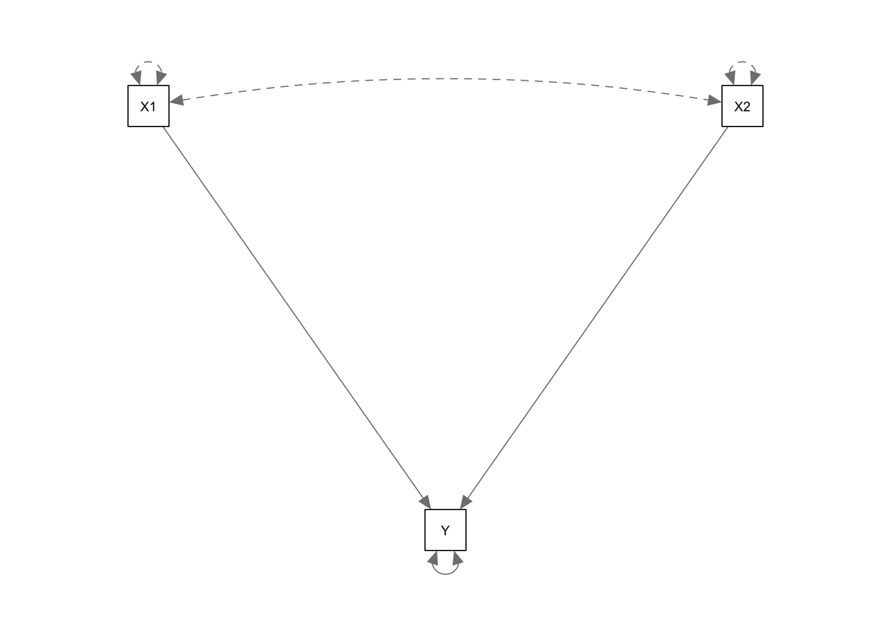
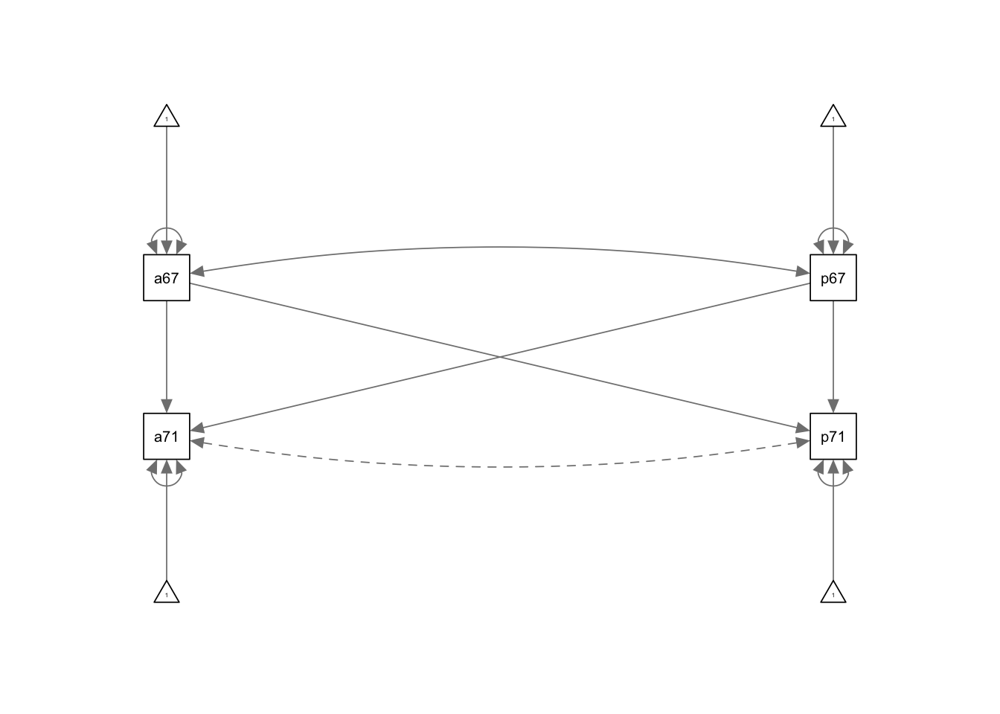

library(lavaan); library(semPlot)This is lavaan 0.6-21
lavaan is FREE software! Please report any bugs.library(lavaan); library(semPlot)This is lavaan 0.6-21
lavaan is FREE software! Please report any bugs.COV <- '
160
106 210
129 109 225 '
typeof(COV)[1] "character"class(COV)[1] "character"mr.cov <- getCov(COV, names = c("Y", "X1", "X2")) #create full covariance matrixWarning: 'getCov' is deprecated.
Use 'lav_getcov' instead.
See help("Deprecated")mr.cov Y X1 X2
Y 160 106 129
X1 106 210 109
X2 129 109 225typeof(mr.cov)[1] "double"class(mr.cov)[1] "matrix" "array" mr.model <- ' Y ~ X1 + X2 '
mr.fit1 <- sem(mr.model, sample.cov = mr.cov, sample.nobs = 256)
summary(mr.fit1, fit.measures = TRUE, standardized = TRUE)lavaan 0.6-21 ended normally after 1 iteration
Estimator ML
Optimization method NLMINB
Number of model parameters 3
Number of observations 256
Model Test User Model:
Test statistic 0.000
Degrees of freedom 0
Model Test Baseline Model:
Test statistic 197.408
Degrees of freedom 2
P-value 0.000
User Model versus Baseline Model:
Comparative Fit Index (CFI) 1.000
Tucker-Lewis Index (TLI) 1.000
Loglikelihood and Information Criteria:
Loglikelihood user model (H0) -913.665
Loglikelihood unrestricted model (H1) -913.665
Akaike (AIC) 1833.331
Bayesian (BIC) 1843.966
Sample-size adjusted Bayesian (SABIC) 1834.456
Root Mean Square Error of Approximation:
RMSEA 0.000
90 Percent confidence interval - lower 0.000
90 Percent confidence interval - upper 0.000
P-value H_0: RMSEA <= 0.050 NA
P-value H_0: RMSEA >= 0.080 NA
Standardized Root Mean Square Residual:
SRMR 0.000
Parameter Estimates:
Standard errors Standard
Information Expected
Information saturated (h1) model Structured
Regressions:
Estimate Std.Err z-value P(>|z|) Std.lv Std.all
Y ~
X1 0.277 0.043 6.454 0.000 0.277 0.317
X2 0.439 0.041 10.603 0.000 0.439 0.521
Variances:
Estimate Std.Err z-value P(>|z|) Std.lv Std.all
.Y 73.710 6.515 11.314 0.000 73.710 0.462mr.fit2 <- sem(mr.model, sample.cov = mr.cov, sample.nobs = 256, mimic = "Mplus")Warning: lavaan->lav_lavaan_step05_samplestats():
sample.mean= argument is missing, but model contains mean/intercept
parameters.summary(mr.fit2, fit.measures = TRUE, standardized = TRUE)lavaan 0.6-21 ended normally after 1 iteration
Estimator ML
Optimization method NLMINB
Number of model parameters 4
Number of observations 256
Model Test User Model:
Test statistic 0.000
Degrees of freedom 0
Model Test Baseline Model:
Test statistic 197.408
Degrees of freedom 2
P-value 0.000
User Model versus Baseline Model:
Comparative Fit Index (CFI) 1.000
Tucker-Lewis Index (TLI) 1.000
Loglikelihood and Information Criteria:
Loglikelihood user model (H0) -913.665
Loglikelihood unrestricted model (H1) -913.665
Akaike (AIC) 1835.331
Bayesian (BIC) 1849.512
Sample-size adjusted Bayesian (SABIC) 1836.831
Root Mean Square Error of Approximation:
RMSEA 0.000
90 Percent confidence interval - lower 0.000
90 Percent confidence interval - upper 0.000
P-value H_0: RMSEA <= 0.050 NA
P-value H_0: RMSEA >= 0.080 NA
Standardized Root Mean Square Residual:
SRMR 0.000
Parameter Estimates:
Standard errors Standard
Information Expected
Information saturated (h1) model Structured
Regressions:
Estimate Std.Err z-value P(>|z|) Std.lv Std.all
Y ~
X1 0.277 0.043 6.454 0.000 0.277 0.317
X2 0.439 0.041 10.603 0.000 0.439 0.521
Intercepts:
Estimate Std.Err z-value P(>|z|) Std.lv Std.all
.Y 0.000 0.537 0.000 1.000 0.000 0.000
Variances:
Estimate Std.Err z-value P(>|z|) Std.lv Std.all
.Y 73.710 6.515 11.314 0.000 73.710 0.462semPlot::semPaths(mr.fit1)
CORR <- '
1.000
.498 1.000
.738 .643 1.000
.649 .721 .823 1.000'
SDs <- c(13.76, 10.41, 15.00, 13.29)
pa.cov <- getCov(CORR)
pa.cov <- cor2cov(pa.cov, sds = SDs, names = c("X", "Y1", "Y2", "Y3"))Warning: 'cor2cov' is deprecated.
Use 'lav_cor2cov' instead.
See help("Deprecated")pa.model <- '
Y1 ~ b*Y2
Y2 ~ a*X
Y3 ~ c*Y1 + d*Y2
#indirect effects
ad :=a*d
abc :=a*b*c
bc :=b*c
#total effects
XtoY3 := ad+abc
Y2toY3 :=d+bc'
pa.fit <- sem(pa.model, sample.cov=pa.cov, sample.nobs = 116, mimic = "Mplus")Warning: lavaan->lav_lavaan_step05_samplestats():
sample.mean= argument is missing, but model contains mean/intercept
parameters.# pa.fit2 <- sem(pa.model, sample.cov=pa.cov, sample.nobs = 116)
# When mimic="Mplus", the number of free parameters is NOT consistent with Mplus output for this example. However, that is NOT always the case.
summary(pa.fit, fit.measures = TRUE, standardized = TRUE)lavaan 0.6-21 ended normally after 1 iteration
Estimator ML
Optimization method NLMINB
Number of model parameters 10
Number of observations 116
Model Test User Model:
Test statistic 1.377
Degrees of freedom 2
P-value (Chi-square) 0.502
Model Test Baseline Model:
Test statistic 310.802
Degrees of freedom 6
P-value 0.000
User Model versus Baseline Model:
Comparative Fit Index (CFI) 1.000
Tucker-Lewis Index (TLI) 1.006
Loglikelihood and Information Criteria:
Loglikelihood user model (H0) -1223.560
Loglikelihood unrestricted model (H1) -1222.871
Akaike (AIC) 2467.120
Bayesian (BIC) 2494.656
Sample-size adjusted Bayesian (SABIC) 2463.046
Root Mean Square Error of Approximation:
RMSEA 0.000
90 Percent confidence interval - lower 0.000
90 Percent confidence interval - upper 0.165
P-value H_0: RMSEA <= 0.050 0.594
P-value H_0: RMSEA >= 0.080 0.295
Standardized Root Mean Square Residual:
SRMR 0.013
Parameter Estimates:
Standard errors Standard
Information Expected
Information saturated (h1) model Structured
Regressions:
Estimate Std.Err z-value P(>|z|) Std.lv Std.all
Y1 ~
Y2 (b) 0.446 0.049 9.042 0.000 0.446 0.643
Y2 ~
X (a) 0.805 0.068 11.779 0.000 0.805 0.738
Y3 ~
Y1 (c) 0.417 0.079 5.291 0.000 0.417 0.327
Y2 (d) 0.543 0.055 9.913 0.000 0.543 0.613
Intercepts:
Estimate Std.Err z-value P(>|z|) Std.lv Std.all
.Y1 0.000 0.737 0.000 1.000 0.000 0.000
.Y2 0.000 0.936 0.000 1.000 0.000 0.000
.Y3 0.000 0.626 0.000 1.000 0.000 0.000
Variances:
Estimate Std.Err z-value P(>|z|) Std.lv Std.all
.Y1 63.015 8.274 7.616 0.000 63.015 0.587
.Y2 101.572 13.337 7.616 0.000 101.572 0.455
.Y3 45.517 5.977 7.616 0.000 45.517 0.260
Defined Parameters:
Estimate Std.Err z-value P(>|z|) Std.lv Std.all
ad 0.437 0.058 7.585 0.000 0.437 0.452
abc 0.150 0.035 4.258 0.000 0.150 0.155
bc 0.186 0.041 4.566 0.000 0.186 0.210
XtoY3 0.587 0.062 9.401 0.000 0.587 0.607
Y2toY3 0.729 0.047 15.604 0.000 0.729 0.823#obtain model-implied (fitted) covariance matrix and mean vector
fitted(pa.fit)$cov
Y1 Y2 Y3 X
Y1 107.434
Y2 99.539 223.060
Y3 98.890 162.651 175.101
X 67.387 151.010 110.113 187.705
$mean
Y1 Y2 Y3 X
0 0 0 0 #obtain unstandardized residuals of a fitted model
resid(pa.fit)$type
[1] "raw"
$cov
Y1 Y2 Y3 X
Y1 0.000
Y2 0.000 0.000
Y3 0.000 0.000 0.000
X 3.332 0.000 7.547 0.000
$mean
Y1 Y2 Y3 X
0 0 0 0 #obtain standardized residuals of a fitted model
resid(pa.fit, type="standardized")$type
[1] "standardized"
$cov
Y1 Y2 Y3 X
Y1 0.000
Y2 0.000 0.000
Y3 0.000 0.000 0.000
X 0.489 0.000 1.166 0.000
$mean
Y1 Y2 Y3 X
0 0 0 0 #obtain the estimated covariance matrix of parameter estimates
vcov(pa.fit) b a c d Y1~~Y1 Y2~~Y2 Y3~~Y3 Y1~1 Y2~1
b 0.002
a 0.000 0.005
c 0.000 0.000 0.006
d 0.000 0.000 -0.003 0.003
Y1~~Y1 0.000 0.000 0.000 0.000 68.465
Y2~~Y2 0.000 0.000 0.000 0.000 0.000 177.877
Y3~~Y3 0.000 0.000 0.000 0.000 0.000 0.000 35.721
Y1~1 0.000 0.000 0.000 0.000 0.000 0.000 0.000 0.543
Y2~1 0.000 0.000 0.000 0.000 0.000 0.000 0.000 0.000 0.876
Y3~1 0.000 0.000 0.000 0.000 0.000 0.000 0.000 0.000 0.000
Y3~1
b
a
c
d
Y1~~Y1
Y2~~Y2
Y3~~Y3
Y1~1
Y2~1
Y3~1 0.392lower <- '12.892,
7.064, 9.237,
7.417, 5.205, 12.585
5.077, 5.091, 7.375, 10.036'
wheaton.cov <- getCov(lower, names = c("anomia67","powerless67", "anomia71", "powerless71"))
wheaton.model <- '
anomia71 ~ anomia67 + powerless67
powerless71 ~ anomia67 + powerless67
anomia67 ~~ powerless67
anomia71 ~~ 0*powerless71'
wheaton.fit <- sem(wheaton.model, sample.cov = wheaton.cov, sample.nobs = 932, mimic = "Mplus")Warning: lavaan->lav_lavaan_step05_samplestats():
sample.mean= argument is missing, but model contains mean/intercept
parameters.# wheaton.fit2 <- sem(wheaton.model, sample.cov = wheaton.cov, sample.nobs = 932)
summary(wheaton.fit, fit.measures = TRUE, standardized = TRUE)lavaan 0.6-21 ended normally after 17 iterations
Estimator ML
Optimization method NLMINB
Number of model parameters 13
Number of observations 932
Model Test User Model:
Test statistic 301.214
Degrees of freedom 1
P-value (Chi-square) 0.000
Model Test Baseline Model:
Test statistic 1550.935
Degrees of freedom 6
P-value 0.000
User Model versus Baseline Model:
Comparative Fit Index (CFI) 0.806
Tucker-Lewis Index (TLI) -0.166
Loglikelihood and Information Criteria:
Loglikelihood user model (H0) -9145.166
Loglikelihood unrestricted model (H1) -8994.559
Akaike (AIC) 18316.331
Bayesian (BIC) 18379.217
Sample-size adjusted Bayesian (SABIC) 18337.930
Root Mean Square Error of Approximation:
RMSEA 0.568
90 Percent confidence interval - lower 0.515
90 Percent confidence interval - upper 0.622
P-value H_0: RMSEA <= 0.050 0.000
P-value H_0: RMSEA >= 0.080 1.000
Standardized Root Mean Square Residual:
SRMR 0.094
Parameter Estimates:
Standard errors Standard
Information Expected
Information saturated (h1) model Structured
Regressions:
Estimate Std.Err z-value P(>|z|) Std.lv Std.all
anomia71 ~
anomia67 0.459 0.034 13.490 0.000 0.459 0.464
powerless67 0.213 0.040 5.291 0.000 0.213 0.182
powerless71 ~
anomia67 0.158 0.032 4.975 0.000 0.158 0.179
powerless67 0.430 0.038 11.467 0.000 0.430 0.413
Covariances:
Estimate Std.Err z-value P(>|z|) Std.lv Std.all
anomia67 ~~
powerless67 7.056 0.425 16.590 0.000 7.056 0.647
.anomia71 ~~
.powerless71 0.000 0.000 0.000
Intercepts:
Estimate Std.Err z-value P(>|z|) Std.lv Std.all
.anomia71 0.000 0.093 0.000 1.000 0.000 0.000
.powerless71 0.000 0.087 0.000 1.000 0.000 0.000
anomia67 0.000 0.118 0.000 1.000 0.000 0.000
powerless67 0.000 0.100 0.000 1.000 0.000 0.000
Variances:
Estimate Std.Err z-value P(>|z|) Std.lv Std.all
.anomia71 8.067 0.374 21.587 0.000 8.067 0.642
.powerless71 7.035 0.326 21.587 0.000 7.035 0.702
anomia67 12.878 0.597 21.587 0.000 12.878 1.000
powerless67 9.227 0.427 21.587 0.000 9.227 1.000semPlot::semPaths(wheaton.fit)
rawdat <- read.fwf("data/wheaton-generated.dat", widths=rep(8,6),header = FALSE, col.names = c("anomia67", "powerless67", "anomia71", "powerless71", "educ", "sei"))
head(rawdat) anomia67 powerless67 anomia71 powerless71 educ sei
1 3.68 4.30 5.30 2.84 4.74 24.88
2 3.14 -0.17 1.43 4.82 5.52 23.70
3 10.77 6.31 7.14 5.02 0.70 19.82
4 8.90 6.30 9.39 6.58 0.33 18.31
5 13.12 9.71 11.97 10.48 -0.27 16.96
6 3.06 4.57 4.45 6.68 0.73 20.94Alternatively, you can import the original SPSS dataset use the import function from the rio package. Pay attention to the variable names. R is case sensitive. SPSS, like Mplus, is case insensitive.
library(rio)
rawdat2 <- import("data/wheaton-generated.sav")
head(rawdat2)Fit the model using the sem() function from lavaan.
wheaton.model <- '
anomia71 ~ anomia67 + powerless67
powerless71 ~ anomia67 + powerless67
anomia67 ~~ powerless67
anomia71 ~~ 0*powerless71'
wheaton.fit.rawdat <- sem(wheaton.model, data=rawdat, mimic = "Mplus")
summary(wheaton.fit.rawdat, fit.measures = TRUE, standardized = TRUE)
wheaton.fit2.rawdat <- sem(wheaton.model, data=rawdat)
summary(wheaton.fit2.rawdat, fit.measures = TRUE, standardized = TRUE)TITLE: Multiple regression with two independent variables
DATA: FILE IS "data\COV.DAT";
TYPE IS COVARIANCE;
NOBSERVATIONS ARE 256;
VARIABLE: NAMES ARE Y X1 X2;
MODEL: Y ON X1 X2;
X1 WITH X2;
OUTPUT: SAMPSTAT STANDARDIZED RESIDUAL CINTERVAL;TITLE: this is an example of an overidentified
path analysis model from Cnudde and McCrone (1966)
DATA: FILE IS "data\CORR.DAT";
TYPE IS CORRELATION STDEVIATIONS;
NOBSERVATIONS ARE 116;
VARIABLE: NAMES ARE X Y1 Y2 Y3;
MODEL: Y1 ON Y2;
Y2 ON X;
Y3 ON Y1 Y2;
MODEL INDIRECT: Y3 IND Y2 X;
Y3 IND Y1 Y2;
OUTPUT: SAMPSTAT STANDARDIZED RESIDUAL CINTERVAL;TITLE: Path analysis model - Wheaton et al. (1977) example
DATA: FILE IS "data\Wheaton.txt";
TYPE IS COVARIANCE;
NOBSERVATIONS ARE 932;
VARIABLE: NAMES ARE X1 X2 X3 X4;
MODEL: X3 ON X1 X2;
X4 ON X1 X2;
X1 WITH X2;
! estimate covariance between X1 and X2
X1*; X2*;
! estimate variances of X1 and X2
X3 WITH X4@0;
! fix the residual covariance between X3 and X4 at 0.
! otherwise, it is a free parameter by default
OUTPUT: SAMPSTAT STANDARDIZED RESIDUAL CINTERVAL;TITLE: Path analysis model - Wheaton et al. (1977) example
raw data
DATA: FILE IS "data\wheaton-generated.dat";
FORMAT IS F8 F8 F8 F8 F8 F8;
! you can also use 6F8;
VARIABLE: NAMES ARE anomia67 powles67 anomia71 powles71 educ sei;
USEVARIABLES ARE anomia67 powles67 anomia71 powles71;
MODEL: anomia71 ON anomia67 powles67;
powles71 ON anomia67 powles67;
anomia67 WITH powles67;
! estimate covariance
anomia67*; powles67*;
! estimate variances
anomia71 WITH powles71@0;
! fix the residual covariance at 0.
OUTPUT: SAMPSTAT STANDARDIZED RESIDUAL CINTERVAL;